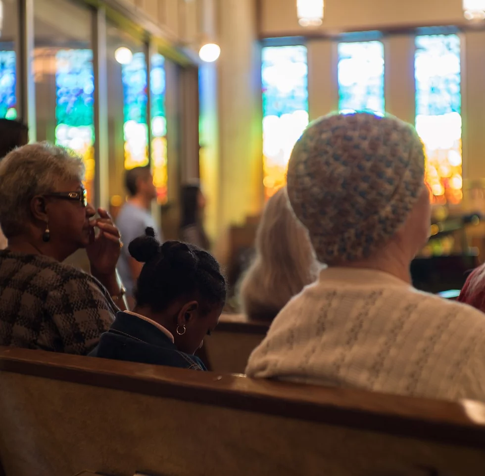
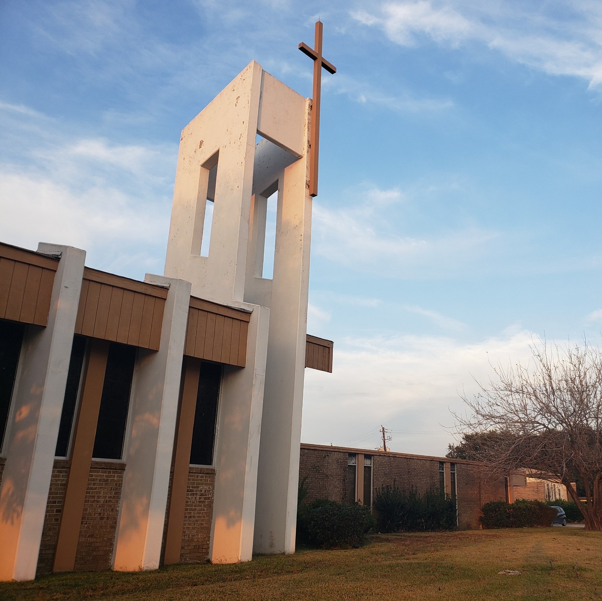

A diverse community of individuals centered on serving Christ

We welcome ALL to come worship and praise the one true God through a blend of traditional and contemporary worship. Jesus is calling for you.
"Come to me, all you who are weary and burdened, and I will give you rest." Matthew 11:23 (NIV)
We are a diverse group of individuals spanning from all walks of life. We open our doors to anyone regardless of socio-economic status, age, or language. Come die to your old, sinful self and be reborn in the atoning blood of the Cross.

We stream our services weekly on our Facebook to accomodate for those unable to attend. However, we encourage you to attend in person if possible!